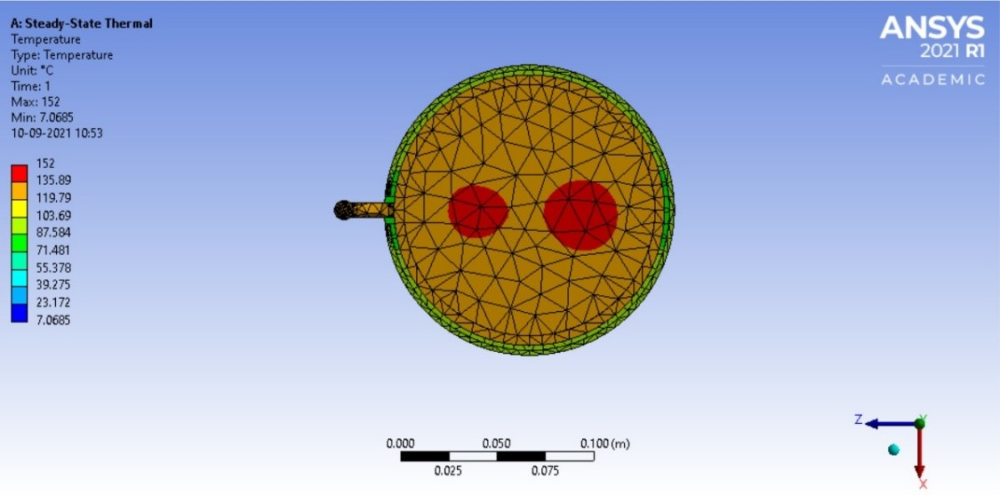
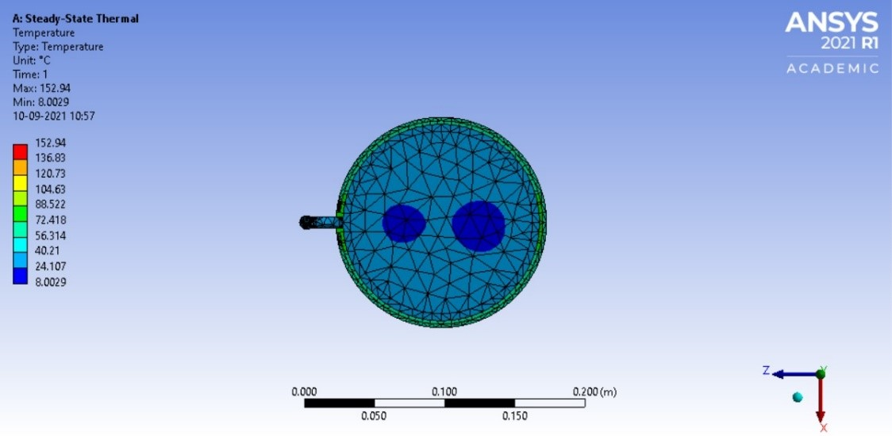

Early 19th century scientists, Thomas Seebeck and Jean Peltier, first discovered
the phenomena that are basis for the current thermoelectric industry. Seebeck
found that if you placed a temperature gradient across the junctions of two
dissimilar conductors, electrical current would flow. Peltier, on the other hand,
learned that passing current through two dissimilar electrical conductors,
caused heat to be either emitted or absorbed at the junction of the materials.
It was only after mid-20th Century advancements in semiconductor technology,
however, that practical applications for thermoelectric devices became
feasible. With modern techniques, we can now produce thermoelectric
“modules” that deliver efficient solid-state heat-pumping for both cooling and
heating; many of these units can also be used to generate DC power at reduced
efficiency. New and often elegant uses for thermoelectric continue to be
developed each day.
We propose an apparatus for creating a kettle capable of heating as well as
cooling water, using thermoelectric modules for our final year capstone project
working on the same Peltier effect as stated above working on its principle that
when an electric current flows through a circuit comprising dissimilar
conductors, thermal energy is absorbed from one junction, and is discharged at
the other, making the former cooler and the latter.
We have tried to keep the design of our kettle as well as each part of our kettle as simple as possible
and opted to go for ready made parts wherever possible. Finally we were able to reach a design where
we can create the basic structure of the kettle using just 8 parts. The 8 parts being:-
1) Container
2) Container Holder
3) Handle
4) Peltier Plates
5) Heat Sink
6) Fan Housing
7) Fan
8) Kettle Base
These different parts have been assembled systematically to form a dual purpose thermoelectric kettle with
proper contact assignment.
The container, container holder and handle are bonded together and collectively called
the container and this is where we can heat or cool our liquid. The container has two grooves at it's botttom which
are meant to fit the Peltier plates in it for when we rest the container on the plates to bring about the temperature
change.
The peltier paltes have heat sinks permanently attached to them on the other side and right below the heat sinks, is
fan sitting in the fan housing. This works as the temperature regulation system of our kettle.
All the components we have discussed till now are dependent on the kettle base either directly or indirectly to provide
housing and stability to the entire apparatus.
For this kettle, different materials are required at separate places/parts of the product. Where excess heat is generated, thermal resistive materials are used. The container is made up of aluminum which has balanced heat resistance compared to copper and is cheaper to procure and manufacture; places where physical touch is to be made, Plastics are used e.g., Handle and Base are made up of Delrin and Bakelite, respectively. For easy manufacturing, Sheet metal operating is to be done on Mild steel for the lid mechanism. 3D printer materials used are Stainless steel and Polycarbonate. Polycarbonate works comftably at higher temperate therefore the lid can withstand the hot steam produced from the water.
We did steady state thermal analysis of our kettle in ANSYS for both hot and cold working conditions to see how our kettle is actually functioning and identify the various heatzones of our kettle. To factor in real world conditions we even considered air moving from left to right during our analysis hence the heating or cooling zones formed right above the peltier plates are uneven in size in both conditions.
In this working condition the temperature can vary from 152° right above the peltier plates to about 119° along the inner top edge of the kettle. It is also visible that while the container is getting hot, the rest of the apparatus is maintaining a much lower temperature and even this temperature of the outer body will be masked using insulative material.
In this working condition the temperature can vary from 8° right above the peltier plates to about 40° along the inner top edge of the kettle. In this condition the only part of the kettle that will have a high temperature is the heat sink attached to the peltier plate.
